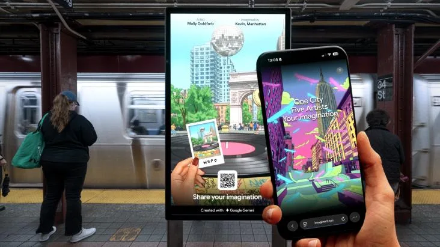
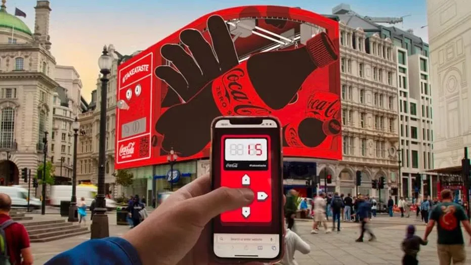
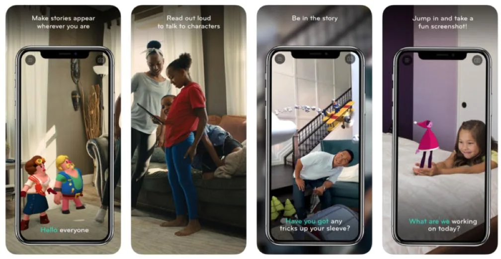
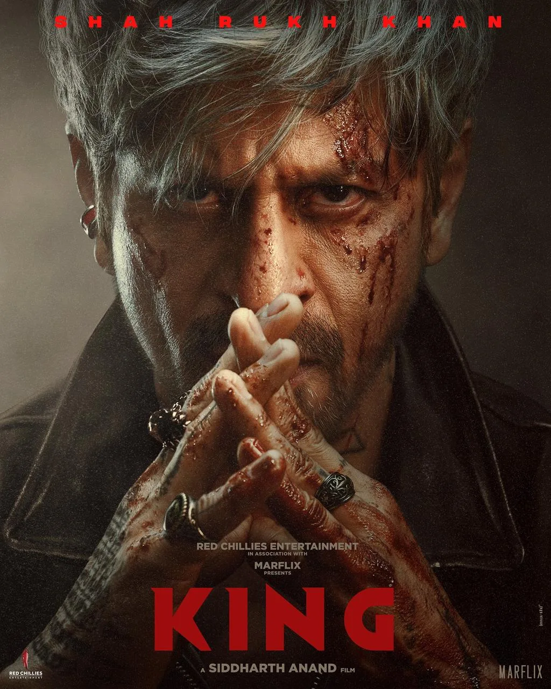
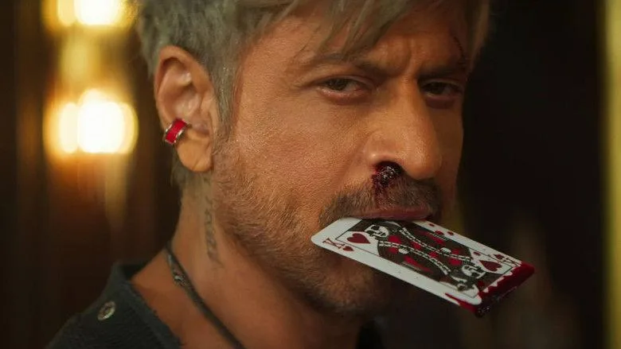
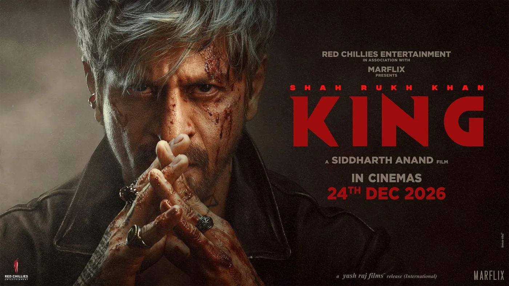

The Final Thesis · section 66 of 92
PART VII — THE NEXT TECHNOLOGICAL FRONTIER
12. FLAM: The ghost of Ra.One meets the AI era



4
The most recent technology connection in this investigation is FLAM.
Business Standard reported on September 15, 2026, that FLAM raised $40 million in a Series B round led by QED Investors, with Shah Rukh Khan among the investors. The report describes FLAM as an AI-powered interactive-content company and says the company reported more than 100 enterprise customers.

flamapp.ai
This is a documented connection between Shah Rukh Khan and a business operating in AI-enabled interactive media.
It is not evidence that FLAM is developing the marketing campaign for KING. It does not establish that SRKWORLD is an official project, or that the proposed fan-franchising model has been commissioned.
The distinction between a real investment and a speculative connection is precisely what makes the research interesting.
Three technological eras

2011
The character and platform era
Games, graphic novels, character merchandise, bespoke digital assets and cross-platform campaign extensions.

2013
The data and analytics era
Social-media measurement, audience engagement, campaign analytics and the management of digital conversation.

2026 and beyond
The interactive AI era
Potentially personalised content, AI-assisted storytelling, interactive experiences and creator participation at scale.
The first two eras are grounded in the historical campaign records.
The third is a technological possibility, not a claim about a confirmed KING strategy.
The comparison is nevertheless valuable. In 2011, building a bespoke digital experience required significant production and distribution effort. Modern AI tools can potentially reduce the cost of creating variations of content, while interactive technologies can allow audiences to respond to and influence an experience.
Whether those capabilities can be deployed responsibly and commercially around a film is a separate question.
The hypothesis
Could the next stage of entertainment marketing move from distributing content to enabling audiences to create within a controlled, licensed universe?
In this model, the film remains the central creative property, but the audience's experience could extend into interactive stories, games, local events, fan challenges and original creative work.
The potential benefit is continuity: an audience relationship that does not have to be rebuilt from zero with every release.
The risks are equally substantial: unauthorised use of likenesses, unclear ownership of AI-generated material, privacy concerns, low-quality content, and the possibility that commercial incentives overwhelm the creative relationship between a star and the audience.
FLAM is relevant because it establishes a real technology-investment connection. SRKWORLD is relevant because it articulates a possible fan-facing architecture. Neither fact proves that the two are connected.
The bridge between them is a research hypothesis—not a revelation about a secret plan.
13. KING: Two clips, a global conversation, and the question of what comes next



6
By September 2026, KING had become the immediate focus of the next chapter in Shah Rukh Khan's cinematic story.
Bollywood Hungama lists the film's release date as December 24, 2026. The film's public record identifies Siddharth Anand as director, with Shah Rukh Khan, Gauri Khan and Siddharth Anand among the producers.
Bollywood Hungama
+1
The early promotional narrative has been striking in its contrast with Ra.One.
In 2011, the campaign began months ahead of release, with a highly visible series of trailers, newspaper advertising, brand partnerships, games, merchandise and character extensions.
With KING, the early phase has been characterised by a much smaller set of visual reveals, controlled information and extensive audience anticipation.
That comparison creates a compelling marketing question.
Does a campaign need to distribute a large volume of official content to sustain attention?
Or can a recognisable star, a carefully controlled reveal and a highly active fan culture create a different kind of promotional momentum?
The available evidence supports a study of the official assets and their dates, the public release calendar, press coverage and fan-created content. It does not support a precise claim about global audience reach from two clips alone.
The scarcity question
A restrained campaign can have several explanations.
It may reflect creative direction. It may be a production decision. It may be a distribution strategy. It may be intended to protect the story, or simply reflect the stage of the release cycle.
It is not possible to establish the underlying intention from the volume of public material alone.
What can be measured is the relationship between official releases and subsequent public attention.
A rigorous KING campaign study should record:
| Metric | What to measure |
|---|---|
| Official assets | Number and type of trailers, clips, posters, songs and announcements, with publication dates. |
| Attention | Views, engagement and platform-specific metrics, preserving the measurement period and source. |
| Fan activity | Publicly observable edits, fan art, discussion and creative responses, with sampling methodology. |
| Press | Volume and timing of coverage across entertainment and mainstream publications. |
| Conversion | Advance booking and ticket-sales data when available, with the source and market identified. |
The important comparison is not simply how many trailers were released.
It is how the campaign converts limited official information into sustained, measurable audience engagement—and how that compares with the much more elaborate Ra.One campaign.
What's cooking?
This is the point at which the narrative should resist the temptation to manufacture a secret.
There is no need to claim that a hidden franchise, technology platform or coordinated commercial master plan exists.
The public record already provides a sufficiently intriguing convergence:
A history of early digital marketing innovation.
A subsequent period in which that particular innovation model became > less visible.
A major cinematic resurgence in 2023.
Continuing commercial and fan-facing activity.
A documented investment connection to AI-enabled interactive > content.
An upcoming film whose early promotional strategy invites comparison > with the earlier experiments.
The question is whether these developments are independent parts of a long career—or whether they offer a useful lens through which to imagine the next evolution of entertainment marketing.
The answer remains open.
And that is the suspense.